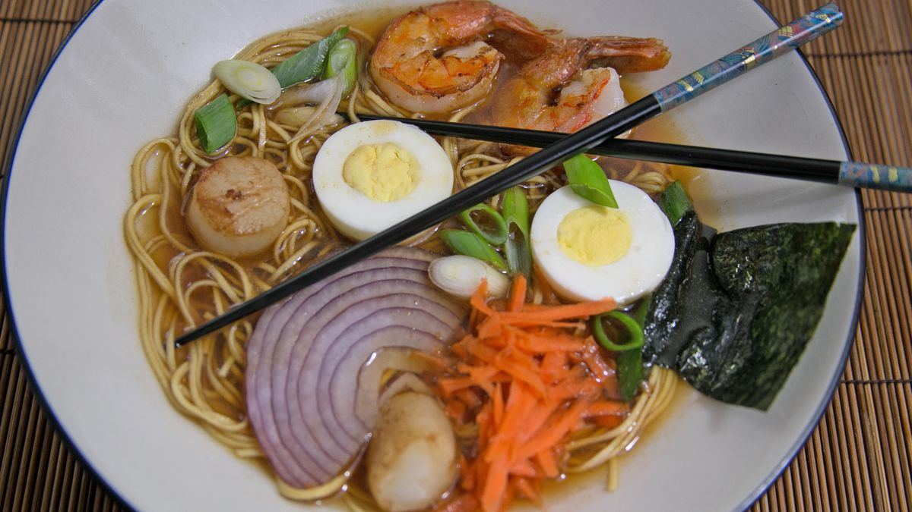

How To Make Seafood Ramen
----RAMEN----
- 250 g Vermicelli ramen noodles
- 1 carrot diagonally sliced
- Pak choy trimmed and washed
- 1 handful Baby Spinach washed
- 2-3 Spring Onions diagonally sliced
- 1 boiled (tea stain) egg
- 50 g Bean sprouts
- 1 lime
- 1 red chilli sliced
- Nori to garnish thinly cut using scissors
- Siricha to spiced up (before serving) - optional
Method
- Bring 6 cups of water in a deep pan to boil with chicken, ginger, garlic, onions, spring onions, carrots, soya sauce and pepper and leave it to simmer for 40 minutes on low heat, stir occasionally.
- Boil an egg or two for six minutes, peeled and soaked it in a cup of tea to stain.
- Once the broth reduced and cooked, add miso paste, mushroom corriander and honey and let it simmer for another 20 minutes on a low heat.
- Blanch the carrots and the beansprouts over the simmering broth on a strainer, refresh the bean sprouts in cold water, keep it aside.
- Brush the the seafood with garlic chilli oil and fry on high with additional oil for couple of minutes in batches until cooked through, keep it warm.
- While the fish is frying, cook noodles in the same strainer over the simmering broth as per packet instruction and keep it warm
- Now it is time to taste the soup and season your taste buds. If you like things a little spicier add a dash of siricha sauce. Not salty enough for you? Add a dash more soy sauce.
- Bring the stock to boiling. Put the pak choy with noodles in a bowl and ladle in the stock through a strainer.
You Made Some Seafood Ramen!
